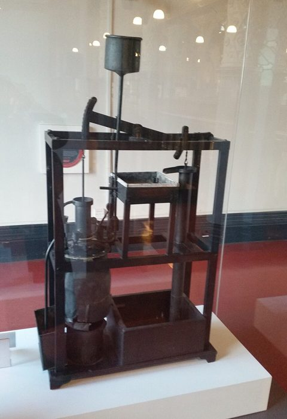
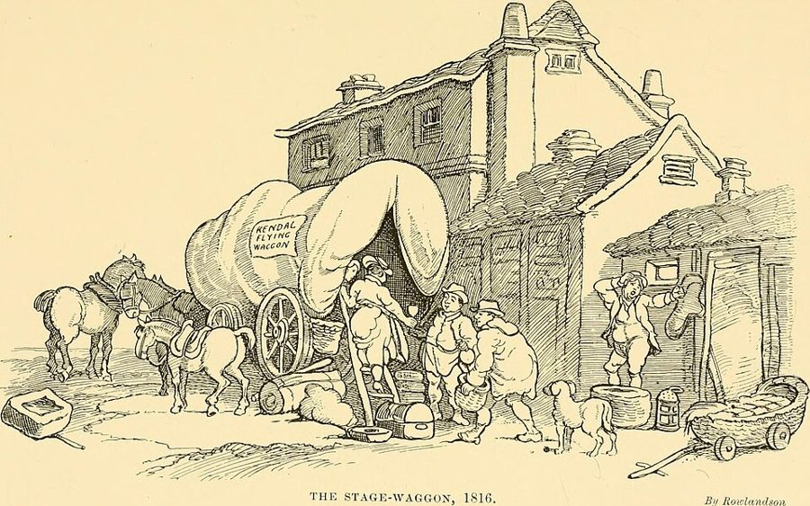

这一页在做什么
全书的开头。斯密先回答一个问题：一个国家「富」，到底是什么意思？他的答案和当时的主流不一样，不看国库里有多少金银，看普通人一年能用上多少东西。接着他找出让这些东西变多的头号原因：分工。别针厂、屠夫和面包师、苏格兰高地的钉匠，这几个全书最有名的例子都在这一页。读的时候抓两条线：分工为什么能让产量翻几百倍，它又是从哪里来的、被什么卡住。

读之前：这一页在全书的哪里
这是全书的起点。前面短短一页「引言和本书计划」先把五卷的路线交代清楚，然后卷一第 1–3 章讲分工：第 1 章说分工有多厉害，第 2 章说分工从哪来，第 3 章说分工能走多远。后面的价格、工资、资本、贸易，都是从「人人分工、互相交换」这个画面往下推的。这三章虽短，是全书的地基。
同样一群人，为什么分了工就能多做出几百倍的东西？没有人设计，分工又是怎么出现的？
斯密把生产力最大的进步归给分工，连机器的发明也算在分工名下。今天看，新技术、新知识是更大的来源（他写书时工业革命才刚开头）。别把分工当成富裕的唯一答案，见「对照今天」。
读的时候带着这几个问题。不用先找答案，读完回来对照「检查一下理解」。
- 斯密说一个国家过得好不好，看哪个比例？这和「看国库里有多少金银」有什么不同？§1
- 别针厂的数字里，哪些是斯密说「肯定」的，哪些只是「也许」？§2
- 屠夫、酿酒师和面包师那句话，前后各接着什么？读完整段，你还觉得斯密在说「自私是好事」吗？§6
- 苏格兰高地为什么养不起一个专门的钉匠？§8
这一页的路线
斯密的写法是先举一个小到不能再小的例子，再一层层放大。引言定好题目：财富是一国每年的产物，按人头算。第 1 章从别针这种「微不足道」的小东西讲起，数出产量差多少倍，再拆成三个原因，最后一下子放大到整个社会：一件日工穿的粗呢外套背后站着成千上万人。第 2 章往回追问分工的来历，答案是人爱交换，屠夫面包师那段就在这里；接着他顺手说人天生差别不大，读到这里会觉得跳了一下，其实是在补「分工让人各有所长」。第 3 章转向分工的边界，从高地的小村一路讲到地中海和中国的水道，用历史来印证。
斯密落在哪：一国的财富是普通人每年能用上的东西；让这些东西变多的头号原因是分工；分工不是谁设计的，是人爱交换的结果；而交换的范围，也就是市场有多大，限制了分工能细到什么程度。
分节地图
这一页是全书引言和卷一第 1–3 章，本站切成 9 节。粗体是本站起的节名；「杨译里找」后面是杨敬年译本里这一节开头附近的小标题或第一句，在电子书里搜它就能跳过去；灰色的英文是原文这一节开头的几个词。标「先读」的是最短读法，读完打个勾。
- 一国的财富是什么每年劳动的产品供应每年的消费THE annual labour of every nation …全书的题目和路线图，只有一页。第 1 段的「每年」和第 2 段的「按人数算」是关键，财富从此不再是一堆攒下的金银。
- 别针厂劳动生产力最大的改进，以及劳动…THE greatest improvement in the productive …全书第一个例子，第 3 段。留意「certainly」和「perhaps」这两个词分别跟着哪个数。
- 种地为什么难分工在每一种其他的工艺和制造业中…In every other art and manufacture …一大段旁枝：农活跟着季节走，没法分得很细，所以富国在农业上的优势不如在制造业上大。有空再读。
- 分工的三种好处这种好处是由于三种不同的情况This great increase of the quantity …熟练、省掉换活的时间、机器。第 7 段写乡下织工磨洋工，第 8 段是那个拴绳子的男孩。
- 日工的一件粗呢外套由于实行劳动分工的所有不同行业…It is the great multiplication of …从一家作坊放大到整个社会。第 11 段那张长长的清单值得慢慢读，结尾是全章最有名的一句比较。
- 屠夫、酿酒师和面包师劳动分工起因于人性中进行交换的倾向THIS division of labour, from which …分工从哪来。名句在第 2 段中间，把整段读完，后面还有一个乞丐。
- 哲学家和街头搬运夫就像我们通过契约、交易、购买…As it is by treaty, by barter …弓箭匠的故事讲专业化怎样自然出现；第 4 段说人天生的差别比我们以为的小，顺手挖苦了哲学家的虚荣。
- 苏格兰高地养不起钉匠劳动分工受到交换能力的限制AS it is the power of exchanging …分工受市场大小限制。第 2 段钉匠一年三十万枚、高地一年卖不出一千枚；第 3 段马车和帆船的账很好算。
- 地中海、尼罗河和中国运河根据最可靠的记载…The nations that, according to the …用古代史印证水运的作用，是 18 世纪的推测，细节有错（第 5 段以为浪是潮汐带来的，Cannan 注里指出了），有空再读。
先用中文过一遍：这一页的概念
先把这一页用到、斯密默认你懂的几个概念讲一遍。讲的是概念本身，斯密拿它推出什么，读原书时自己看。每个概念都有一句「今天」：今天的经济学怎么叫它、怎么看它。
§1年产物 annual produce of the land and labour
一个国家一年里做出来、供大家吃穿用的全部东西。斯密强调两点。第一，财富是每年流出来的「流量」，像一条河，不是存在库里的「存量」，像一个水池。第二，要拿它和吃它的人数比：一国一年产出很多，人口更多，日子照样紧。当时英国很有势力的一种看法，把金银的多少当成国家贫富的标志，国家要富就得多攒金子；斯密管这一套叫「重商主义」，卷四专门驳它。
今天：这正是今天「人均国内生产总值（人均 GDP）」的思路：一年的产出，除以人口。斯密手里没有统计数字，用的却是同一把尺子。
在这一页：引言第 1–2 段。全书五卷都在回答「怎样让这个比例变大」。
§2分工 division of labour
把一件活拆成许多道工序，每人只做其中一道或几道。斯密用这个词指两层意思：一家作坊里的工序分工（别针厂），和整个社会里的行业分工（农夫只种地，铁匠只打铁）。他把两层当成同一回事来讲，只是后一层大到一眼看不全。拿做饭打比方：一个人从买菜、洗切、掌勺到洗碗全包，和一个后厨里各管一摊，一晚上能出的菜数差得很远。
今天：这个词今天照用，范围更大了：一部手机的零件来自几十个国家，叫「全球价值链」。但今天不再认为分工是生产力提高的头号原因，技术进步排在它前面。
在这一页：第 1 章第 1 段立论，第 3 段别针厂，第 5–9 段三种好处，第 10–11 段放大到社会。
§6交换倾向与自利 the propensity to truck, barter, and exchange; self-love
斯密说人性里有一种「以物易物、互通有无」的倾向，别的动物没有；它是天生的，还是人会推理、会说话的结果，他猜多半是后者。分工就是这种倾向慢慢带出来的后果，没有哪个聪明人事先设计。人为什么肯和你交换？不是出于好心，而是交换对他有好处，斯密管这叫 self-love，在 18 世纪是个中性词，意思是关心自己的利益，不等于自私自利，更不等于贪婪。译本：「自利之心（self-love）」把英文附上了，正好对照。
今天：「没人设计、却运转得井井有条」后来叫「自发秩序」，是经济学的核心想法之一。「只有人会交换」被动物实验部分动摇，见「对照今天」。
在这一页：第 2 章第 1–2 段。屠夫、酿酒师和面包师那句就在第 2 段。
§8市场范围 extent of the market
能和你做买卖的人有多少、在多远的地方。市场越大，越养得起「只做一件事」的人：一个小村子一年连一千枚钉子都卖不掉，专门的钉匠就活不下去；一座大城市才养得起专修钟表、专卖纽扣的人。所以分工能细到什么程度，要看市场有多大；而让市场变大的头号办法，在 18 世纪是水运，因为船运东西比马车便宜得多。
今天：经济学家 Stigler 1951 年专门写过一篇论文，题目就是这句话。运河、铁路、集装箱、互联网一次次把市场放大，分工也一次次变细。
在这一页：第 3 章第 1–4 段立论和例子，第 5–8 段拿古代史作证。
动手：模拟器
先猜：斯密看到的小作坊里 10 个人分工，一天做四万八千枚针。要是这家作坊开在苏格兰高地的小村子里，10 个人每天能卖出去多少枚？还值得分工吗？再在下面的「市场」里换一换验证。
别针作坊：人越多、分得越细，做得越多吗
拖动「工人」，作坊里的 18 道工序就按人头平分；三个勾是第 1 章说的三种好处，可以分别关掉；「市场」是这家作坊开在哪，一天卖得出多少针。先点「斯密看到的小厂」。
需要浏览器打开脚本才能运行。
- 试试看：点「斯密看到的小厂」（市场会自动设成「伦敦加上出口」）。10 个人一天做多少？每人是单干的多少倍？对一对第 3 段的 48000 枚和 240 倍。
- 试试看：把三个勾一个一个关掉，看倍数各掉多少。哪一种好处最值钱？（三种好处各占多少，书里没说，这里的分摊是本站的假设，所以别把答案当真，重要的是看出三者是相乘的。）
- 试试看：点「开在高地小村」，再把工人加到 10 个。做得越多，卖不掉的越多，这就是第 3 章说的分工受市场大小的限制。市场换到多大，10 个人才都有活干？
模拟器的基准是斯密给的两个数：单干的人一天做不到 20 枚（这里按 20 枚算，所以倍数是下限），10 个人分工一天 48000 枚。中间各人数的产量、三种好处的拆分、四种市场一天能卖多少枚，都是本站为了演示设的，不是斯密的数。
故事和背景
这一页里的人、事和 18 世纪的东西，按在书里出现的顺序排，标题前是节号。
§2斯密真的进过别针厂吗
斯密说「我见过」一家只有十个人的小作坊（第 3 段）。可是研究这个例子的法国学者 Peaucelle 发现，书里的工序、数字和用词，和当时几份法文资料，包括《百科全书》的别针条目，对得很紧。Peaucelle 认为斯密多半没有亲眼见过这家作坊，「十个人」更像来自 1766 年一本法文词典里按十道工序算的例子。斯密 1760 年代初在格拉斯哥讲课时，学生记下的笔记里已经有「十八道工序」的说法。比较稳妥的说法是：他把读来的法国资料和自己的见闻揉在一起，讲成了一个人人记得住的例子。这不影响道理，只是别把它当成一份实地调查。
§4拴绳子的男孩：一个好故事，大半是传说

第 8 段讲：早期的蒸汽机要一个男孩守着，活塞一上一下，他就得一开一关阀门；有个贪玩的孩子用一根绳子把阀门的把手拴到机器上，阀门就自己开关了，他好溜去玩。斯密拿它说明「机器常是干活的人自己发明的」。故事很好，可是 Cannan 在注里说它「至少大半是虚构的」，看来是从 Desaguliers 1744 年书里的一段话误读出来的：那段话说，一个看机器的男孩 Humphry Potter 加了一个卡扣，让机器每分钟多走几下；后来工程师 Henry Beighton 1718 年造机器时，把这些卡扣和绳子都去掉了。Desaguliers 没写他是为了去玩。今天的研究还查出，Potter 在 1713 年已经二十四岁，算不上男孩。
§5一件外套的家谱，两百年后又写了两次
第 11 段那张清单从牧羊人、梳毛工一直数到运染料的水手和烧炭工，就为了说明一件粗呢外套背后有多少人。1958 年，美国作家 Leonard Read 换成一支铅笔，写了一篇《我，铅笔》，结论一样：世上没有一个人知道怎样从头造出一支铅笔。2009 年，英国设计专业的学生 Thomas Thwaites 真去试了：他想从挖矿炼铁开始，自己造一台商店里卖不到 4 英镑的烤面包机。那台烤面包机拆开有约四百个零件；他花了大约九个月，钱花了一千多英镑，最后做出来的东西样子很像，可插上电只撑了几秒钟就烧坏了。
§6名句后面那个乞丐
屠夫、酿酒师和面包师那句常被单独引用，成了「斯密说人人自私就好」的证据。可在原文里，它前面几句说：文明社会里人时时需要一大群人帮忙，一辈子却只来得及交上几个朋友；后面紧跟着一个乞丐：就连乞丐也不全靠施舍，他拿到钱去买吃的，拿到旧衣服去换合身的。斯密要说的是：陌生人之间怎样合作。至于狗，他说从没人见过两只狗公平地交换骨头；Cannan 在注里吐槽：两只狗交换骨头能图什么，实在想不出来。
§8伦敦到爱丁堡：一辆大车对一条船

第 3 章第 3 段算了一笔账：一辆宽轮大车，8 匹马拉、2 个人跟车，伦敦到爱丁堡六个星期来回，运将近 4 吨；一条 6 到 8 个人驾驶的帆船，同样时间来回运 200 吨。所以水运的 6 到 8 个人，抵得上陆路的 100 个人、400 匹马和 50 辆大车。Cannan 注说斯密大概说得夸张了些，19 世纪初有人说这种车能拉 8 吨。就算打个对折，船还是便宜得多。这笔账今天还在：按每吨每公里算，海运至今是最便宜的运货办法。
原典：斯密的原话
这本书是公版书，下面几段整段放斯密的原文，配本站的白话译。原文后面的灰字告诉你它在杨译里的哪个小标题附近，可以对照着读；最后一行是这段里今天容易读错的 18 世纪词。
§2别针厂
全书第一个例子，也是经济学史上最有名的一段。在杨译如制针业那个小标题下面。
One man draws out the wire, another straights it, a third cuts it, a fourth points it, a fifth grinds it at the top for receiving the head; to make the head requires two or three distinct operations; to put it on, is a peculiar business, to whiten the pins is another; it is even a trade by itself to put them into the paper; and the important business of making a pin is, in this manner, divided into about eighteen distinct operations, which, in some manufactories, are all performed by distinct hands, though in others the same man will sometimes perform two or three of them. I have seen a small manufactory of this kind where ten men only were employed, and where some of them consequently performed two or three distinct operations. But though they were very poor, and therefore but indifferently accommodated with the necessary machinery, they could, when they exerted themselves, make among them about twelve pounds of pins in a day. There are in a pound upwards of four thousand pins of a middling size. Those ten persons, therefore, could make among them upwards of forty-eight thousand pins in a day.
本站译：一个人抽铁丝，一个人把它拉直，第三个人截断，第四个人磨尖，第五个人把另一头磨平，好安针头。光是做针头就要两三道工序；把针头装上去是一门专门的手艺，把针镀白又是一门；就连把针一排排插到纸上，也自成一个行当。做一枚别针这件「要紧事」，就这样分成了大约十八道工序。有的作坊里每道工序各有专人；也有的作坊，一个人有时兼两三道。我见过这样一家小作坊，只雇了十个人，所以有几个人得兼做两三道工序。他们很穷，所以该有的机器也配得不怎么齐，可是卯足了劲，十个人一天能做出十二磅左右的针。一磅中号针有四千多枚，所以这十个人一天能做出四万八千多枚。
「the important business」是斯密在打趣：别针是最不起眼的小东西，他偏要郑重其事地拆给你看。
- manufactory手工作坊、工场。1776 年机器大工厂才刚冒头，这里的「厂」全靠手和简单的工具
- whiten给针镀白：当时的别针多用黄铜做，最后镀一层锡，看起来是白的
- middling中等的，不是「平庸」
§5欧洲的君主和勤劳的农民
第 1 章的收尾，也是斯密心里「财富」最清楚的一幅画：财富不是国王的珠宝，是普通人的日子。在杨译于是一个治理得很好的社会出现了普遍富裕之后的那一段。
Observe the accommodation of the most common artificer or day-labourer in a civilized and thriving country, and you will perceive that the number of people of whose industry a part, though but a small part, has been employed in procuring him this accommodation, exceeds all computation. … Compared, indeed, with the more extravagant luxury of the great, his accommodation must no doubt appear extremely simple and easy; and yet it may be true, perhaps, that the accommodation of an European prince does not always so much exceed that of an industrious and frugal peasant, as the accommodation of the latter exceeds that of many an African king, the absolute master of the lives and liberties of ten thousand naked savages.
本站译：看看一个文明、兴旺的国家里最普通的手艺人或打零工的人用的东西，你会发现，为了把这些东西送到他手上出过力的人，哪怕每人只出了一点点力，多得根本数不清。……和达官贵人那种挥霍的奢华比起来，他用的东西当然显得非常简单、平常。可是也许真是这样：一位欧洲君主比一个勤劳节俭的农民过得好的那一截，并不总是比得上这个农民比许多非洲国王过得好的那一截，而那些国王，可是一万个赤身露体的野人的生杀予夺的主人。
比的是两段差距的大小，不是谁比谁好；「perhaps」「may be」都是斯密的原话。「赤身露体的野人」带着 18 世纪欧洲人的偏见。Cannan 注说这一段有所本：洛克、Mandeville 都做过类似的比较，洛克比的是美洲部落的「国王」和英格兰的日工。
- accommodation生活上用的东西、起居条件，不是「住宿」
- artificer手艺人、工匠
- the great达官贵人
§6屠夫、酿酒师和面包师
全书最常被引用、也最常被断章取义的一段。这里连着前后几句一起放。在杨译这种倾向只有人才有那个小标题下面那一大段的后半。
In civilized society he stands at all times in need of the co-operation and assistance of great multitudes, while his whole life is scarce sufficient to gain the friendship of a few persons. … But man has almost constant occasion for the help of his brethren, and it is in vain for him to expect it from their benevolence only. He will be more likely to prevail if he can interest their self-love in his favour, and shew them that it is for their own advantage to do for him what he requires of them. … It is not from the benevolence of the butcher, the brewer, or the baker, that we expect our dinner, but from their regard to their own interest. We address ourselves, not to their humanity but to their self-love, and never talk to them of our own necessities but of their advantages. Nobody but a beggar chuses to depend chiefly upon the benevolence of his fellow-citizens. Even a beggar does not depend upon it entirely.
本站译：在文明社会里，一个人无时无刻不需要一大群人的合作和帮助，可他一辈子也只来得及和少数几个人交上朋友。……人几乎时时刻刻都需要同胞帮忙，而只指望别人发善心，是指望不上的。要是他能让对方看到，帮他办事对对方自己有好处，打动对方的自利之心，事情就好办多了。……我们指望的晚饭，不是来自屠夫、酿酒师和面包师的善心，而是来自他们对自身利益的在乎。我们跟他们打交道，不诉诸他们的同情心，而是诉诸他们的自利之心；从来不跟他们说我们有多需要，只跟他们说这对他们有什么好处。除了乞丐，没有人愿意主要靠同胞的善心过日子。就连乞丐，也不是全靠它。
注意斯密说的是「only」「chiefly」：不是说善心不存在，而是说成千上万的陌生人之间，光靠善心不够。下一句接着讲乞丐怎样拿施舍来的旧衣服去换东西。
- self-love自爱、关心自己的利益，18 世纪道德哲学里的中性词，不是「自私」
- benevolence善心、仁慈
- brethren同胞（brother 的旧复数）
- chuseschooses 的旧拼法
§7哲学家和街头搬运夫
经济学的鼻祖说人天生差不多，还顺手挖苦了自己这一行。在杨译分工使得才能的差异比天赋的差异更加重要那个小标题前面一段。
The difference of natural talents in different men is, in reality, much less than we are aware of; and the very different genius which appears to distinguish men of different professions, when grown up to maturity, is not upon many occasions so much the cause, as the effect of the division of labour. The difference between the most dissimilar characters, between a philosopher and a common street porter, for example, seems to arise not so much from nature, as from habit, custom, and education. When they came into the world, and for the first six or eight years of their existence, they were, perhaps, very much alike, and neither their parents nor playfellows could perceive any remarkable difference. About that age, or soon after, they come to be employed in very different occupations. The difference of talents comes then to be taken notice of, and widens by degrees, till at last the vanity of the philosopher is willing to acknowledge scarce any resemblance.
本站译：人和人天生的才能差别，其实比我们以为的小得多。不同行当的人长大以后，看上去禀性大不一样，这在很多时候与其说是分工的原因，不如说是分工的结果。差别最大的两种人，比如一位哲学家和一个街头搬运夫，他们的不同，看来与其说出自天性，不如说出自习惯、风俗和教育。刚生下来，到六岁八岁以前，他们也许非常相像，父母和玩伴都看不出有什么明显的不同。大约到了这个年纪，或者再晚一点，两人开始干完全不同的活。这时才能的差别开始显出来，一点点拉大，到最后，哲学家的虚荣心简直不肯承认两人还有什么相像之处。
斯密自己就是「哲学家」，这句挖苦有自嘲的味道。「seems」「perhaps」「not so much … as」都是原话：他说的是「比我们以为的小得多」，意思是差别主要来自后天，不是说没有差别。
- genius禀性、天资、性情，不是「天才」
- philosopher做学问的人，包括今天说的科学家，不专指哲学家
译本勘误
杨译这几章整体可靠。下面只收会把人读歪的几处。灰字是英文原文那一处的几个词；方框里是杨译的原句，在电子书里搜它。
§2每磅「四千多」枚，不是「将近」数字
… There are in a pound upwards …
译本：「每英磅将近有中等大小的针4000枚」
upwards of 是「多于」，杨译成了「将近」，方向反了。按「将近四千」算，十二磅凑不出下一句的 48000 枚。「英磅」是电子版的错字，指重量单位磅。
§5比的是两段差距误译
… does not always so much exceed …
译本：「而这个农民的生活用品却总是超过」
原文比较的是两段差距的大小：君主比农民强出的那一截，不如农民比非洲国王强出的那一截。杨译拆成了两句平行的话，还多出一个原文没有的「总是」。读这句以本站在「原典」里的译文为准。
§6「主要」靠，不是「完全」靠误译
… Nobody but a beggar chuses to …
译本：「除了乞丐之外，没有人完全依靠」
原文是 chiefly，主要。译成「完全」以后，和下一句「即使乞丐，也并不完全依靠」撞在一起，读起来像斯密自相矛盾。原意是：除了乞丐，没人愿意主要靠别人的善心过日子；连乞丐也不是全靠它。
§7「与其说天生，不如说后天」误译
… not so much from nature, as …
译本：「似乎不是由于天赋，而是由于习惯」
原文是 not so much … as，比较的是哪一边更重：差别更多来自习惯、风俗和教育。杨译成「不是……而是……」，像是斯密说天赋毫无作用。这句正是本页「人天生真的差不多吗」争的那一句，读时按比较的意思理解。
§81776 年还没有轮船误译
… a ship navigated by six or …
译本：「一艘由6个或8个人驾驶的轮船」
原文只说 ship，那时是帆船。蒸汽轮船要到 19 世纪初才出现。读成轮船，这笔账的年代感就错了。
§9斯密没说巴伐利亚、奥地利是野蛮之地误译
… seem in all ages of the world …
译本：「还有巴伐利亚、奥地利和匈牙利」
原文说「自古处在野蛮状态」的，是非洲内陆和鞑靼、西伯利亚；巴伐利亚、奥地利、匈牙利只在段末出现，说多瑙河对它们用处不大，因为没有一国占着整条河。杨译把这三国也排进了「野蛮」的名单。这一节的小标题是 Cannan 页边小结的译文，把几处并在一起说「很落后」，那是编者的概括，不是斯密的话。
读完：斯密到底说了什么
读完原书再看。下面把这一页的论点按逻辑重排，每条后面标着依据在哪几段，以及今天怎么看（理由在「对照今天」和「本站怎么看」）。
国家富不富，看普通人每年人均能用上多少东西
财富是一国每年劳动的产物，好坏看它和消费人数的比例；比例由两件事决定：劳动的技能，干有用活的人占多大比例；他说「似乎」前者更要紧：文明国家很多人不干活，最穷的工人只要勤俭，也比任何野蛮人过得好。
§1 引言第 1–4 段劳动生产力的提高，主要来自分工
别针厂里十人分工，人均产量至少是单干的 240 倍；原因有三：熟能生巧，省掉换活的时间和磨蹭，专心一件事的人更会想出省力的机器。他用的词是「seem」：似乎是分工的结果。
§2 §4 第 1 章第 1、3、5–8 段分工不是谁设计的，是人爱交换慢慢带出来的
人有交换的倾向，别的动物没有；陌生人之间不能指望善心，要让对方看到好处，所以每个人专做自己最拿手的去换别的。弓箭匠就是这样变成专门的军械匠的。
§6 §7 第 2 章第 1–3 段人天生差别不大，各有所长是分工的结果
哲学家和搬运夫小时候也许差不多，后来干了不同的活，差别才一点点拉大。狗的品种差别比人大得多，却互相帮不上忙；人有交换，各人的长处才能汇到一处。
§7 第 2 章第 4–5 段分工能细到什么程度，看市场有多大
小村子养不起专门的钉匠；水运比陆运便宜得多，能把市场放大，所以手艺和产业最早在海边和大河边兴起，后来才往内陆走。
§8 第 3 章第 1–4 段合起来：富裕来自分工，分工来自交换，交换的范围限制分工。斯密从一枚别针出发，搭起了全书的骨架：后面讲价格，是因为大家要交换；讲资本，是因为分工要先有积蓄；讲贸易，是因为市场越大越好。
对照今天
这一页里能拿后来的研究和数据检验的说法。每张卡判的是标题里「书里的说法：」后面那一句。
- 成立今天的经济学和证据支持这句话。
- 部分成立大方向对，细节或适用范围要改。
- 过时说的是 18 世纪的世界，当时也许对，今天的制度和技术已经变了。
- 被推翻后来的经济学或证据说明它错了。
- 有争议经济学界至今没有定论，两边各有代表性的研究。
书里的说法：劳动生产力最大的改进，似乎都是分工的结果
- 书里
- 第 1 章第 1 段；第 8 段说连机器的发明也来自分工。
- 当时
- 1776 年，瓦特的改良蒸汽机刚造出来，纺纱机在少数工厂里转。斯密看到的是手工作坊的世界，那里分工确实是最显眼的进步。
- 今天
- 经济学家 Solow 1957 年估算，美国 1909–1949 年每工时产出翻了一番，大约八成七来自广义的「技术进步」，只有一成多来自资本增加。这个「技术进步」是算剩下的余数，分工和组织的改进也装在里面，所以它不能单独给分工排名次；但它说明光靠多投资本走不远，持续的进步要靠新知识、新技术，而它们越来越出自专门的研究，不是车间里的工人。核对于 2026-10。依据：Solow, Technical Change and the Aggregate Production Function, Review of Economics and Statistics, 1957。
书里的说法：十个人一天做四万八千枚针，是我亲眼见过的小作坊
- 书里
- 第 1 章第 3 段：「I have seen」。
- 当时
- 别针是 18 世纪讲分工的经典题目，法国《百科全书》1755 年有专门的条目，1760 年代的图版卷又配了图，法国科学院 1761 年也出过一本讲制针的书。
- 今天
- 法国学者 Peaucelle 逐句对照，认为书里的工序和数字取自几份法文资料，斯密多半没有亲眼见过；按其中一份 1766 年的资料推算，每人每天约四千八百枚，数字本身不离谱。斯密叫得出名字的工序只有十来道，磨尖那一道还弄错了。道理没问题，「亲眼所见」要打折扣。核对于 2026-10。依据：Peaucelle, Adam Smith's use of multiple references for his pin making example, European Journal of the History of Economic Thought, 2006。
书里的说法：交换是人独有的倾向，别的动物都不会
- 书里
- 第 2 章第 2 段：从没人见过两只狗公平地交换骨头。
- 当时
- 纯凭观察，没有实验。
- 今天
- 灵长类学家 Brosnan 和 de Waal 的实验里，卷尾猴（2004）和黑猩猩（2005）都学会了拿代币跟实验员换食物，不过策略很简单：不管对方给什么，总是交出更值钱的那枚。2008 年的实验还发现，黑猩猩要经过训练才肯拿手里的食物换更好的。动物之间像人这样成规模、跨群体的交换，至今没有发现。斯密说的大体还站得住，只是「完全不会」说过了头。核对于 2026-10。依据：Brosnan & de Waal, Folia Primatologica, 2004；Brosnan & de Waal, Primates, 2005；Brosnan 等, Chimpanzee Autarky, PLoS ONE, 2008。
书里的说法：分工受市场范围的限制，水运能把市场放大
- 书里
- 第 3 章第 1–3 段。
- 当时
- 英国正在挖运河（1761 年开通的布里奇沃特运河让曼彻斯特的煤价大跌），斯密的账反映的是他眼前的事。
- 今天
- 经济学家 Stigler 1951 年的同名论文把它当作产业分工的基本规律；此后集装箱海运、全球贸易让一件产品的工序分散到许多国家，市场越大、分工越细，这个关系一再得到印证。核对于 2026-10。依据：Stigler, The Division of Labor is Limited by the Extent of the Market, Journal of Political Economy, 1951。
- 另一边
- Becker 和 Murphy 1992 年指出，今天的分工常常在市场还远没用完时就停下了，卡住它的是协调许多专门人手的成本，以及大家掌握的知识有多少。市场大小仍是一道上限，只是常常不是最先碰到的那一道；本站看来，这是给斯密补上另一个限制，不是推翻他。依据：Becker & Murphy, The Division of Labor, Coordination Costs, and Knowledge, Quarterly Journal of Economics, 1992。
本站怎么看
这一页最值得争的几个问题。每块先摆主流看法，再摆斯密在书里怎么说，最后是本站的评论。
屠夫面包师那句，是在说「贪婪是好事」吗
主流看法：研究斯密的学者今天大多认为不是。斯密 1759 年的《道德情操论》开篇讲的就是同情心；19 世纪德国学者一度以为两本书一个讲利他、一个讲利己，是两个斯密，今天的主流认为两本书不矛盾：一本讲人怎样形成道德，一本讲陌生人之间怎样分工合作。
斯密的看法：第 2 章第 2 段：人一辈子需要成千上万人帮忙，却只交得上几个朋友，所以要靠互利的交易；self-love 是关心自己的利益，名句后面紧跟着乞丐。
本站的评论：这句话真正的洞见是：市场让互不相识、甚至互不喜欢的人也能合作，不需要人人都是好人。但「不需要善心」不等于「善心没用」：交易要靠诚实、守约和法律撑着，斯密在别处讲了很多。把它读成「贪婪有理」，是把一句观察当成了道德口号。
人天生真的差不多吗
主流看法：教育和经历对一个人能干什么影响很大，经济学里叫「人力资本」，这一点被大量研究支持。但行为遗传学的双生子研究发现，认知能力的差异有相当一部分和遗传有关：Plomin 和 Deary 2015 年的综述说，这个比例从婴儿期的两成左右，升到成年后也许高达八成。直接测 DNA 的方法估出来的比例低得多，究竟多大，还在争。
斯密的看法：第 2 章第 4 段：哲学家和搬运夫的差别「似乎」主要来自习惯、风俗和教育，天生的差别「比我们以为的小得多」。
本站的评论：按今天的证据，斯密多半低估了天生的差异。但他的立场在当时有分量：等级社会习惯相信人生来分三六九等，他和休谟一起站在另一边，说差别大多是后天的。今天的证据两边都有：天生的差异确实存在，可教育和机会仍能大大改变一个人。读这一段，记住他用的是「似乎」「也许」。
分工只有好处吗
主流看法：分工提高效率，这没有争议；代价是工作单调。马克思说它让人「异化」，20 世纪的流水线和今天的自动化又一再引出同样的担心。
斯密的看法：这一页只讲好处：第 1 章第 5–8 段，分工让人熟练、专心，还会发明机器。但他在卷五第 1 章换了一副口吻，说一辈子只做几个简单动作的人会变得愚钝，国家要办教育来补救（见页 25）。
本站的评论：同一个人对同一件事说了两面话，这是斯密的诚实，不是矛盾。读这一页时就该知道还有下文，别把第 1 章读成对分工的单纯颂歌。
本站的总体看法：这一页是全书最经得起时间的部分：按人均看财富、分工提高效率、市场大小限制分工，今天仍是经济学的常识。要打折扣的是「分工是进步的头号原因」和「人天生差不多」，前者低估了技术，后者多半低估了天生的差异。
检查一下理解
先在心里答，再点开。答错的那题，回书里把对应那一节再读一遍。
1.（§1）斯密说一个国家过得好不好，看什么？
看每年的劳动产物和消费人数的比例，也就是按人头平均下来能用上多少东西，不看国库里的金银。
2.（§2）别针厂的「240 倍」和「4800 倍」是怎么来的？哪个更有把握？
十人一天四万八千枚，人均四千八百枚。单干的人「肯定」做不到 20 枚，所以至少 240 倍；「也许」一枚也做不出，那就是 4800 倍。240 倍是斯密有把握的下限。
3.（§4）分工让产量增加的三个原因是什么？
工人熟练了；省掉了从一种活换到另一种活的时间，也少了换活时的磨蹭；专心一件事的人更容易想出省力的机器。
4.（§6）斯密说人为什么肯和你交换？
不是出于善心，而是交换对他自己有好处。所以求人办事要说对方能得到什么，不说自己多需要。
5.（§7）斯密拿几种狗来比，想说明什么？
狗的品种天生差别比人大得多，可它们不会交换，各自的长处帮不上彼此；人天生差别小，却因为交换，能把各人的长处汇到一起用。
6.（§8）一个钉匠在苏格兰高地为什么活不下去？
他一年能做三十万枚钉子，高地一年连一千枚也用不了。市场太小，养不起专做一件事的人，只能什么都自己做。
用一句话写下：斯密在这几章反对谁、主张什么，今天还成不成立。
想一想：你今天用到的东西里，有哪一样是你能从头自己做出来的？你自己的工作，算是分得很细的那一种，还是什么都要管的那一种？
精彩回顾
隔几周回来时看这里。想不起来，点节号回到那一节。
一句话：富裕来自分工，分工来自交换，市场有多大，分工就能有多细。
国家富不富，不看金银，看普通人每年人均能用上多少东西。这正是今天人均 GDP 的思路。
§1十个人分工一天四万八千枚，单干的人做不到二十枚。数字多半取自法国资料，道理却成了经济学的第一课。
§2一个贪玩的孩子让蒸汽机的阀门自己开关。故事好听，大半是传说。
§4晚饭靠的是屠夫、酿酒师和面包师在乎自己的利益；紧接着斯密说，连乞丐也不全靠施舍。他讲的是陌生人怎样合作，不是贪婪有理。
§6六到八岁以前也许差不多，后来干了不同的活才分出高下，哲学家的虚荣心却不肯认。
§7一年能做三十万枚，当地一年用不了一千枚。市场太小，分工就没法细。
§8